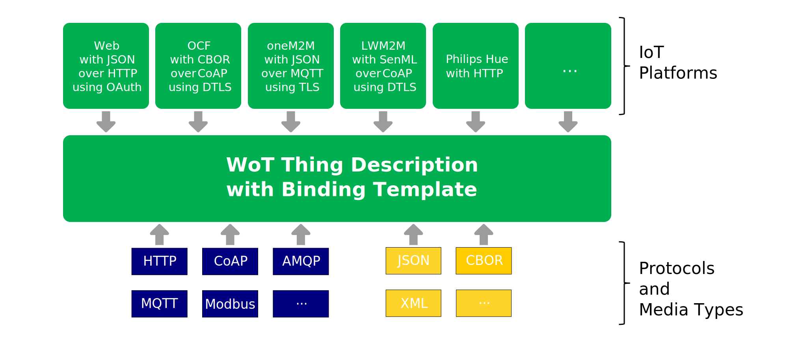

W3C Web of Things enables applications to interact with and orchestrate connected Things at the Web scale.
The standardized abstract interaction model exposed by the WoT Thing Description enables applications to
scale and evolve independently of the individual Things.
Many network-level protocols, standards and platforms for connected Things have already been developed, and
have millions of devices deployed in the field today. These standards are converging on a common set of
transport
protocols and transfer layers, but each has peculiar content formats, payload schemas, and data types.
Despite using unique formats and data models, the high-level interactions exposed by most connected things
can be modeled using the Property, Action, and Event interaction affordances of the WoT Thing Description.
Binding Templates enable a Thing Description to be adapted to a specific protocol, data payload formats or
platforms that combine both in specific ways.
This is done through additional descriptive vocabularies, Thing Models and examples that aim to guide the
implementors of Things and Consumers alike.
This core specification document acts as a base and explains how other binding templates should be designed.
Concrete binding templates are then provided in their respective documents, referred to as subspecifications,
that are linked to from this document.
Please contribute to this draft using the
GitHub Issue
feature of the
WoT Binding Templates repository.
For feedback on security and privacy considerations, please use the
WoT Security and Privacy
Issues, as they are cross-cutting over all our documents.
Introduction
IoT addresses multiple use cases from different application domains, while requiring different deployment patterns for devices.
This results in different protocols and media types, creating the central challenge for the Web of Things:
enabling interactions with the plethora of different IoT platforms and devices that do not follow any particular standard,
but provide an eligible interface over a suitable network protocol.
WoT is addressing this challenge through Binding Templates.
Binding Templates consist of multiple specifications, referred to as a subspecification
in this document, that enable an application client (a WoT Consumer) to interact, using WoT Thing
Description[[WOT-THING-DESCRIPTION]] (TD), with Things that exhibit diverse protocols, payload formats and a
combination of these in platforms and frameworks.
The mechanism that allows Consumers to interact with a variety of Things is called the Binding Mechanism,
without which TDs could not build Hypermedia Controls as explained in the [[WOT-ARCHITECTURE]].
When describing a particular IoT device or platform, the corresponding Binding Template can be used to look up the
communication metadata that is to be provided in the Thing Description to support that platform.
[[[#fig-building-block]]] shows how Binding Templates are used.
Based on the protocol, media type or platform binding template, a TD is created.
The Consumer that is processing a TD implements the required Binding Template that is present in the TD by including a
corresponding protocol stack, media type encoder/decoder or platform stack and by configuring the stack (or its
messages) according to the information given in the TD such as serialization format of the messages and header options.

Platforms, Protocols and Media Types as building blocks for binding templates and TD
Each Interaction Affordance in a TD needs to have a binding to a protocol and to a payload format.
[[[#fig-mechanism]]] below illustrates an excerpt of a TD of a robot arm with of HTTP and JSON bindings.
Here, the Consumer intends to invoke an action of the robot arm (goTo) in order to move it to the
position x equals 12 and y equals 100.
In order to do so, it creates the correct payload, serializes it and sends it using the correct protocol options.
The Thing gets the message over the network and responds with a message that corresponds to its TD.
Other protocols, payload formats or their combination are possible and are explained in [[[#binding-overview]]].
Binding Templates Mechanism inside a TD excerpt with messages of its Thing and a Consumer.
The fundamental WoT terminology such as
Thing,
Consumer,
Thing Description (TD),
Interaction Model,
Interaction Affordance,
Property,
Action,
Event,
Data Schema,
Content Type,
Protocol Binding,
Binding Template,
Servient,
Vocabulary,
WoT Interface,
WoT Runtime,
IoT Platform,
etc. is defined in Section 3
of the WoT Architecture specification [[WOT-ARCHITECTURE]].
In addition, this specification introduces the following definitions:
A binding template document that is published separately from this document (called the core document) that
specifies a binding template for a protocol, payload format or platform.
All binding template subspecifications respect the rules set in the Core Specification.
This document.
All binding template subspecifications respect the rules set in the Core Specification.
Binding Template Mechanisms
TDs can be bound to specific protocols, payload formats and platforms.
This is possible through the three core mechanisms that allow WoT to be used in various domains and scenarios.
This section explains how these binding mechanism types are structured, should be specified, and links to
corresponding binding documents (subspecifications).
These 3 types of mechanisms are:
Protocols: Application layer protocols (e.g., HTTP[[?RFC7231]], CoAP[[?RFC7252]],
MQTT[[?MQTT]], etc.) whose different message types are mapped to the WoT Thing
Description[[WOT-THING-DESCRIPTION]] forms via reusable vocabulary and extensions.
Payloads: Different payload formats and media types [[IANA-MEDIA-TYPES]] which
can be represented in a TD via Data Schemas or forms.
Platforms: Platforms and frameworks who combine the use of protocols and payloads
in a certain way, which can be represented via entire Thing Models described by the [[WOT-THING-DESCRIPTION]]
or examples of TDs.
Each Binding Template Subspecification is an independent document that has a separate list of authors and
publication date.
This document, called the Binding Template Core Specification, explains the binding mechanism by
giving requirements per respective binding category and links to the respective subspecification.
These can be found in sections [[[#protocol-bindings]]], [[[#payload-bindings-intro]]] and
[[[#platform-bindings-intro]]].
Binding Templates Overview and the Relationships between each Document Type
Each Protocol and Payload Binding Template is specified in a way that they stay independent from each other.
This means that each document can be read independently from the other and can be also developed independently.
However, Platform Binding Templates are dependent on the Protocol and Payload Binding Templates, since a given
platform uses different protocols and payload formats that need to be specified first in their respective
binding templates and referred to within a Platform Binding Template.
Protocol Binding Templates
Introduction to Protocol Binding Templates
[[WOT-THING-DESCRIPTION]] defines abstract operations such as readproperty, invokeaction and
subscribeevent that describe the intended semantics of performing the operation described
by the form in a Thing Description.
In order for the operations to be performed on the affordance, a binding of the operation to the
protocol needs to happen.
In other words, the form needs to contain all the information for a Consumer to, for example read a property,
with the protocol in the form.
Most protocols have a relatively small set of methods that define the message type, the semantic
intention of the message.
REST and PubSub architecture patterns result in different protocols with different methods.
Each target protocol may specify different method names for similar operations, and there may be
semantic differences between similar method names of different protocols.
Additionally, Things may use different methods for performing a particular WoT operation.
For example, an HTTP POST request may be used for a writeproperty operation in one Thing,
while HTTP PUT may be used in another.
For these reasons, Thing Descriptions require the ability to specify which method to use per operation.
Common methods found in REST and PubSub protocols are GET, PUT, POST, DELETE, PUBLISH, and SUBSCRIBE.
Binding Templates describe how these existing methods and associated vocabularies can be used in
a Thing Description to bind to the WoT operations.
This is done by defining the URI scheme of the protocol and mapping the protocol
methods to the abstract WoT operations such as readproperty, invokeaction and
subscribeevent.
In some cases, additional instructions are provided to explain how the vocabulary terms should be used
in different cases of protocol usage.
The examples below show the binding of the readproperty operation for the HTTP and Modbus protocols.
Please note that these are examples and please always refer to the corresponding binding to learn about the
relevant vocabulary terms and their values.
The form elements in the examples above convey the following statements:
Left Example: To do a readproperty of the subject Property Affordance by
performing an HTTP GET request on the resource props/temperature to the host
at example.com on port 80 (Port 80 is assumed as per [[RFC2616]]).
Right Example: To do a readproperty of the subject Property Affordance using the
readCoil function of Modbus at coil 1 of the device
with the 127.0.0.1 address at its port 60000
These bindings and their statements are possible for other operations and protocols as well.
Below are examples for invokeaction and subscribeevent:
The form elements in the examples above convey the following statements:
Left Example: To do an invokeaction of the subject Action Affordance by
performing an HTTP POST request on the resource example/levelaction to the host
at 192.168.1.32 on port 8081.
Right Example: To do a subscribeevent of the subject Event Affordance by connecting
to the MQTT broker at iot.platform.com and port 8088, then subscribing
to the topic thing1/events/overheating.
In some cases, header options or other parameters of the protocols need to be included.
Given that these are highly protocol dependent, please refer to the bindings listed in [[[#protocol-bindings-table]]].
Additionally, protocols may have defined Subprotocols that can be used for some interaction types.
For example, to receive asynchronous notifications using HTTP, some servers may support long polling
(longpoll), WebSub [[WebSub]] (websub) and Server-Sent Events [[eventsource]] (sse).
Subprotocols
As defined in [[WOT-ARCHITECTURE]], a subprotocol is an extension mechanism to a protocol.
A subprotocol can require a sequence of protocol messages or a specific structure of message payloads,
which can have its own semantics within that subprotocol.
The use of a subprotocol is expressed with the subprotocol field, as defined in
[[!WOT-THING-DESCRIPTION]].
It can be used in a form instance to indicate the use of one of these protocols, for example long polling with its
special use of HTTP:
The values that the subprotocol term can take is not constrained by the [[!WOT-THING-DESCRIPTION]]
since different protocols can have different subprotocols.
Correspondingly, subprotocols are linked to the protocol they are extending and should be understood together with
the protocol indicated in href of the forms (or the base).
For WebSockets, the IANA-registered Websocket Subprotocols [[iana-web-socket-registry]] may be used.
For CoAP, "subprotocol":"cov:observe" can be used to describe asynchronous observation
operations as defined by [[RFC6741]].
The subprotocols can be defined and explained as a part of a protocol or platform binding subspecification.
Terms Specified by Protocol Binding Templates
Overall, a protocol binding template specifies the values and structure of certain vocabulary terms in a TD.
The table below lists the vocabulary term, the class it belongs to and whether the subspecification is required
to
specify the values the term can take.
In addition to these, additional terms for describing protocol options are typically added.
Using a Thing Description with a Protocol Binding Template Subspecification
Protocol Binding Templates contain vocabularies that extend the vocabulary found in the [[WOT-THING-DESCRIPTION]].
This means that the way a TD is consumed and how the interactions happen with the Thing are adapted to such vocabularies.
The steps below explain how this process typically looks like.
Detect the protocol: Upon the activation of a form to execute the operation, the Consumer
SHOULD look at the href member and the base (if exists) and identify the protocol.
Choose the correct protocol stack: The Consumer SHOULD use choose the correct protocol from its protocol software stacks.
Validate the forms part of the TD: Using the JSON Schema instances provided in the respective subspecification or through programmatically checking key value pairs, the Consumer MAY validate the respective form terms in order to verify they are correctly specified in the TD instance.
Start communication: The Consumer SHOULD send requests for the chosen operation as specified by the form and additional behavior that is expected.
These are specified using the different form terms such as subprotocol or other vocabulary terms introduced by the protocol binding.
The interaction affordance data exchanged with the Thing SHOULD be according to the Data Schema and Content Type present in the TD.
The corresponding Data Schema to the operation can be found in the [[WOT-THING-DESCRIPTION]], table called Mapping op Values to Data Schemas.
Creating a new Protocol Binding Template Subspecification
When creating a new protocol binding template subspecification, e.g. based on a new communication protocol,
the proposed document should enable implementations of this binding in an interoperable way for
Consumer and Producer implementations.
More specifically, each Binding Template Subspecification MUST specify the following:
URI Scheme: For identification of the used protocol, a standardized URI scheme
[[RFC3986]] value MUST be declared in the form of a string. This URI Scheme is used in TDs at
top level base or in the href term of the forms
container. These can be officially registered ones at IANA [[iana-uri-schemes]] (e.g.
"https://", "coap://") or they can be declared in the protocol
subspecification (e.g. "mqtt://", "modbus+tcp://"). How the full URI
can be constructed for different affordances (or resources) MUST be specified as well.
@context Usage and Ontology: A vocabulary that allows adding protocol options
to a Thing Description forms SHOULD be provided to allow semantic annotations of the operations
with protocol specific information.
The prefix and IRI to be used in the @context in order to link to the vocabulary
of the protocol SHOULD be also provided.
The prefix SHOULD use the v suffix notation in order to avoid confusion with the URI
scheme of the protocol (e.g. htv for HTTP and mqv for MQTT).
Mapping to WoT Operations: Most protocols have a set of methods or verbs that adds a
meaning to the messages of the protocol.
A protocol binding template MUST be able to map WoT operation types (readproperty,
invokeaction, etc.) to concrete protocol message types or methods. When specifying
the mapping, the mapping SHOULD be bidirectional, i.e. it should be clear how to
do a readproperty operation with the given protocol and how an existing
implementation's endpoints can be mapped to a WoT operation should be also clear.
JSON Schema: A JSON Schema to validate the forms of a TD using the Protocol Binding SHOULD be provided. This allows validation of the URI scheme and the vocabulary terms.
The JSON Schema instance SHOULD follow the template provided in the Binding Templates GitHub Repository.
Specification: The official specification document of the protocol SHOULD be
provided. This SHOULD be a static version, i.e. the exact document used during the writing of
the binding that is guaranteed to not change. If this is not possible, the specification
should be marked with a date of access. When the specification is not publicly available and
cannot be linked with a static version, an editor's note should be provided in the
introduction, explaining how to get access to the specification.
A template is also provided for new protocol binding template specifications at the
GitHub Repository.
Payload Binding Templates
Introduction to Payload Binding Templates
[[WOT-THING-DESCRIPTION]] defines two mechanisms to describe how a payload of a message over any protocol
can look like.
Firstly, media types [[IANA-MEDIA-TYPES]] describe the serialization used for sending and receiving the data with a protocol.
They are represented within the contentType in the Forms of a TD, which is mandatory for
each Interaction Affordance.
Secondly, it defines the Data Schema concept to describe the structure of the messages, which are used
together with media types.
The combination of the two allows any message to be described in a TD, allowing correct serialization and
deserialization of the messages by the Thing and Consumers.
In the rest of this section at [[[#payload-bindings-contentType]]] and [[[#payload-bindings-dataschema]]],
you can find examples of how payload bindings can look like.
At [[[#payload-bindings-table]]] you can find the current payload binding templates and [[[#payload-bindings-creating]]]
explains how new payload binding templates can be created.
Content Types
Content type includes the media type and potential parameters for the media type and it enables
proper processing of the serialized documents.
This way, the messages can be exchanged in any format and allow the upper layers of an application
to adapt to different formats.
In some cases such as images, videos or any unstructured data, content type is enough to describe the
payload but in cases like JSON ([[RFC8259]]) a Data Schema is usually provided, like explained in [[[#payload-bindings-dataschema]]].
For example, a number payload can be serialized as JSON or XML and be indicated in the contentType
of the forms with application/json or application/xml, respectively.
Further parametrization is possible via the plus (+) or the semicolon (;)
notations.
In the example below, you can find the form elements with content types for JSON and plain text
with additional parameters.
In this specific case, the forms describe that reading this property with http or
coap result in different content types.
For structured media types, a Data Schema is generally provided in the affordance level as
explained in [[[#payload-bindings-dataschema]]] and
in the Data Schema section of the TD specification.
However, for unstructured data such as images and videos, a Data Schema is typically not available.
Other content types can be also expressed in TDs.
In the list below, examples of different content type variations can be found.
These content types can replace the ones in [[[#example-payload-binding]]].
Structured Content Types without Parametrization
application/json: JSON [[RFC8259]]
application/xml: XML [[RFC5364]]
application/cbor: CBOR [[RFC8949]]
text/csv: CSV [[RFC4180]]
Structured Content Types with Parametrization
application/senml+json: SenML Data serialized in JSON [[RFC8259]]
application/senml+xml: SenML Data serialized as XML
application/ocf+cbor: OCF payload serialized in CBOR
text/csv;charset=utf-8: CSV encoded in UTF-8 [[RFC4180]]
Unstructured Content Types
image/jpeg: JPEG image
video/mp4: MP4 Video
application/octet-stream: Generic binary stream
Data Schemas
Data Schema, as explained in [[WOT-THING-DESCRIPTION]], describes the structure of the messages, which are used together with media types.
Even though it is largely inspired by JSON Schema [[json-schema]], it can be used for describing
other payload types such as [[XML]], string-encoded images, bit representations of integers, etc.
Data Schema SHOULD be used in addition to the media types.
Depending on the case, the structure of the messages can be anything from a simple number to
arrays or objects with multiple levels of nesting.
Existing IoT Platforms and Standards have certain payload formats with variations on how the data is structured.
As explained in [[WOT-THING-DESCRIPTION]], Data Schema can be used in a TD in one of the following places:
Property Affordances: Each property affordance can contain terms for Data Schema
and describe the property values when read, observed or written to.
Action Affordances:input and output vocabulary terms are used
to provide two different schemas when data is exchanged in both directions, such as in
the case of invoking an Action Affordance with input parameters and receiving status information.
Event Affordances:data, dataResponse, subscription
and cancellation are used to describe the payload when the event data
is delivered by the Exposed Thing, the payload to reply with for event deliveries,
the payload needed to subscribe to the event and the payload needed to cancel receiving event
data from the Exposed Thing, respectively.
URI Variables: In the Thing or Affordance level, uriVariables can
describe the data that needs to be supplied inside the request URI as a string.
Below is an example of a simple JSON object payload with the corresponding Data Schema.
Examples from various IoT Platforms and Standards can be found in [[[#sec-payload-examples]]].
Overall, a payload binding template specifies the values and structure of certain vocabulary terms in a TD.
The table below lists the vocabulary term, the class it belongs to and whether the subspecification is required to specify the values
the term can take.
In addition to these, additional vocabulary terms can be added and restrictions to Data Schema terms can be placed.
Terms specified by Payload Binding Templates
Term
Class
Specification Requirement
contentType
Form
mandatory
contentType
ExpectedResponse
optional
contentType
AdditionalExpectedResponse
optional
contentCoding
Form
optional
Existing Payload Binding Templates
The table below summarizes the currently specified payload binding templates.
Creating a new Payload Binding Template Subspecification
Each payload binding template subspecification, SHOULD contain the respective media type.
Ideally this media type has been registered at the IANA registry [[IANA-MEDIA-TYPES]] with a
corresponding mime type (e.g. application/json).
If it is not registered, the binding document can propose a mime type.
Additionally, how that media type is represented in a Data Schema SHOULD be demonstrated with examples.
In all cases, the following information SHOULD be provided:
Specification: The official specification document of the payload format SHOULD be
provided. This SHOULD be a static version, i.e. the exact document used during the writing of
the binding that is guaranteed to not change. If this is not possible, the specification
should be marked with a date of access. When the specification is not publicly available and
cannot be linked with a static version, an editor's note should be provided in the
introduction, explaining how to get access to the specification.
Platform Binding Templates
Introduction to Platform Binding Templates
There are already various IoT platforms on the market that allows exposing physical and virtual Things to the Internet.
These platforms generally require a certain use of a protocol and payload.
Thus, they can be seen as a combination of the and .
In these cases, the use of protocol and payload bindings needs to be supported with how they are related to each other in the specific platform.
For example, Things of a certain platform can require the usage of HTTP and Websockets together with certain JSON payload structures.
Thus, Platform Binding subspecifications provide Thing Models and examples of TDs that allow to semantically group multiple binding templates.
This allows creation of TDs for these platforms in a consistent manner and makes it easier to develop Consumers for them.
Since Platform Binding Templates combine the usage of protocol and payload binding templates, the vocabulary terms and values they can specify
are the combination of vocabulary terms in [[[#table-protocol-terms]]] and [[[#table-payload-terms]]].
Similarly, a Platform Binding subspecification SHOULD NOT introduce new protocol binding templates or media types inside its own document.
If a Platform Binding subspecification requires the usage of protocol or media type, corresponding protocol or payload binding templates MUST be created first.
Existing Platform Binding Templates
The table below summarizes the currently specified platform binding template subspecifications.
Name
Link
Philips Hue
Planned
ECHONET
Planned
OPC-UA
Planned
Creating a new Platform Binding Template Subspecification
Depending on the platform and the variety of devices it proposes, each platform binding template
subspecification will be structured differently.
When the platforms offer a reasonable set of device types, a Thing Model for each device type
SHOULD be provided.
In other cases, possible devices SHOULD be generalized by providing a set of example Thing Models or
TDs.
In all cases, the following information SHOULD be provided:
Protocol: The protocol used by the platform SHOULD be specified and linked to a protocol
binding template subspecification when a corresponding one exists.
Media Type: The media type used by the platform SHOULD be specified and linked to a
payload binding template subspecification when a corresponding one exists.
API Documentation: A static link pointing to the used API Documentation or Specification
of the platform SHOULD be provided. When the documentation is not publicly available and
cannot be included in a static version in the respective folder, an editor's note should be
provided in the introduction, explaining how to get access to the documentation.
Examples of Thing Descriptions with Protocol Binding Templates
The following TD examples uses HTTP, CoAP and MQTT Protocol Binding Templates.
These TDs have Context Extensions which assume that there is a CoAP and MQTT in RDF vocabulary similar to
[[?HTTP-in-RDF10]] that is accessible via the namespaces http://www.example.org/coap-binding#
and http://www.example.org/mqtt-binding#, respectively.
Please note that the TD context at "https://www.w3.org/2019/wot/td/v1" already includes the [[?HTTP-in-RDF10]],
so HTTP context extensions can be directly used and make sure to look at the Binding Template subspecifications to find the
most up-to-date vocabulary terms and examples.
The context extensions we see below have the following instructions to the TD Consumer:
"htv:methodName" member instructs the Consumer which HTTP method has to be applied
(e.g., "GET" for retrieving a resource or "POST" for sending data to a resource).
"cov:method" member instructs the Consumer which CoAP method has to be
applied (e.g., "GET" for the CoAP Method Code 0.01, "POST" for the CoAP Method Code
0.02, or iPATCH for CoAP Method Code 0.07).
"mqv:controlPacket" member instructs the Consumer which MQTT command has
to be applied (e.g., "subscribe" for the subscribing to a topic and "unsubscribe" for
unsubscribing).
First, a TD with multiple protocols is introduced where each interaction affordance has one form with one protocol.
Another version of the previous TD with multiple protocol options per form is shown below.
Notably, the brightness property can be read via HTTP and CoAP, and observed via MQTT;
concentration event can be subscribed to via CoAP and MQTT.
In this case, the Consumer would pick the form it can support based on its internal implementation, e.g. whether
it has CoAP protocol stack or not.
Security and privacy considerations are still under discussion and development; the content below should be
considered preliminary.
Due to the complexity of the subject we are considering producing a separate document containing a detailed security and privacy considerations
discussion including a risk analysis, threat model, recommended mitigations, and appropriate references to
best practices.
A summary will be included here. Work in progress is located in the
WoT Security and Privacy repository.
Please file any security or privacy considerations and/or concerns using the GitHub Issue feature.
Security is a cross-cutting issue that needs to be taken into account in all WoT building blocks.
The W3C WoT does not define any new security mechanisms, but provides guidelines to apply the best
practices from Web security, IoT security, and information security for general software and hardware
considerations.
The WoT
Thing Description must be used together with integrity protection mechanisms and access control
policies.
Users must ensure that no sensitive information is included in the TDs
themselves.
The WoT
Binding Templates must correctly cover the security mechanisms employed by the underlying IoT
platform.
Due to the automation of network interactions necessary in the IoT, operators need to ensure that Things
are exposed and consumed in a way that is compliant with their security policies.
The
WoT Runtime implementation for the
WoT
Scripting API must have mechanisms to prevent malicious access to the system and isolate scripts in
multi-tenant Servients.
Acknowledgements
Special thanks to all active participants of the W3C Web of Things Interest Group and Working Group
for their technical input and suggestions that led to improvements to this document.
Examples of Payloads and Data Schemas from IoT Platforms and Standards
As an extension of [[[#payload-bindings-dataschema]]], this section collects examples of different payloads
and their corresponding DataSchema.
These are from well-known IoT Platforms and Standards and aim to illustrate the various ways a payload can
look like and how one can describe it with a Data Schema.
SenML [[RFC8428]] might use the following construct: